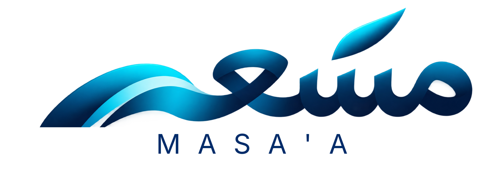

تحديد الاتجاه
تبدأ الرحلة بفهم الطموح وتحديد وجهة للتطور، لتكون الخطوات القادمة أكثر وضوحاً.
ترافق مَسعى الأفراد والجهات في بناء رحلة تطوير منظمة، تربط الطموح بالتعلّم والتقدم.

منصة رقمية تُعنى بتنظيم رحلة التطور وإبراز معناها، لتدعم التواصل بين الفرد والجهة حول التعلم والنمو.
تبدأ الرحلة بفهم الطموح وتحديد وجهة للتطور، لتكون الخطوات القادمة أكثر وضوحاً.
تجتمع تجارب التعلّم والتطوير ضمن مسار متصل، يساعد على رؤية الصورة الكاملة للرحلة.
يتضح ما تحقق، وما يحتاج إلى اهتمام، ليصبح التقدم أساساً للخطوة التالية.
تظهر قيمة رحلة التطور في ما اكتسبه الفرد، وكيف يستعد به لفرصه القادمة.
إلى ما تتطلع إليه. وإلى ما تستطيع أن تصبح عليه.
هل تهتم بمَسعى، أو بشراكة، أو بمحادثة تجريبية، أو بوصول مبكر؟ أخبرنا إلى أين تريد أن تتجه بعد ذلك.